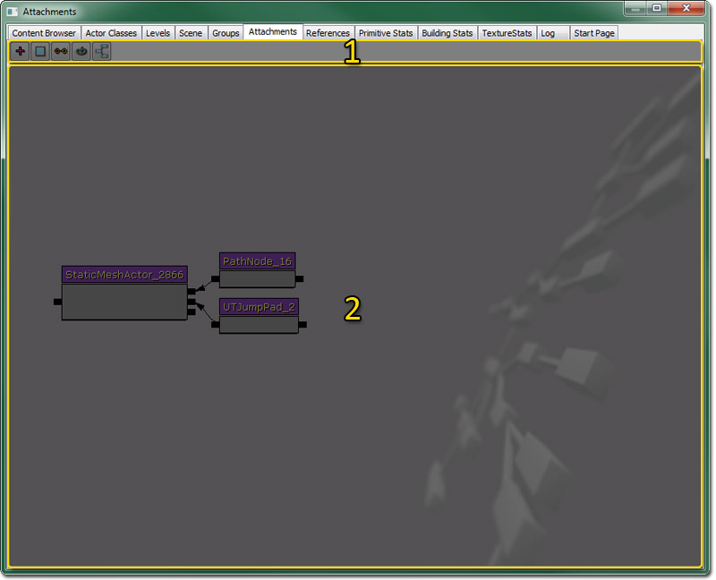

Attachments Browser Reference
Overview
In Unreal, you often want to attach Actors together (using the Base property) to form fairly complicated groups. This is quite a cumbersome process though, as it involves locking and unlocking the property window, finding the Base property etc. It is also difficult to come back to a group and understand exactly what is attached to what, and refactor it if necessary.
To help with this there is now a new 'Attachments' tab in the browser. Think of this as a 'scratch pad', which allows you to easily see, graphically, how objects are connected, and allows you to edit the setup.
Opening the Attachments Browser
The Attachments Browser can be accessed through the View menu of the level editor. Selecting the Browser Windows > Attachments option will open the Attachments Browser directly. Another option is to click the Open the Content Browser button in the main level editor toolbar and then select the Attachments tab in the browser window that opens.
Attachments Browser Interface
The Attachments Browser is divided into two regions: the tool bar, and the workspace.

- Tool Bar
- Workspace
Tool Bar
| | Adds all selected actors in the viewport, and their attachments, to the workspace. |
| | Clears all actors from the workspace. |
| | Attaches all selected actors in the workspace to the last selected actor. |
| | Refreshes the workspace and updates all attachments made outside the Attachments Browser. |
| | Automatically arranges all the actors and attachments in the workspace so that the base actor is on the left and all attachments are organized neatly to its right.. |
Adding Actors
To use this editor, you first need to select and Actor or Actors in the level that you want to work with. Once they are selected, go to the 'Attachments' tab and click the '+' button. This will add those actors, plus anything they are attached to, or anything attached to them, to the workspace. You can add as many actors as you like. The 'base' is on the left, and the child actors are on the right. When you select an Actor in the Attachment Editor, that selection state is also reflected in the level viewports.
Note that although the Attachment Editor looks like Kismet, you cannot move nodes around like you can in tools like you can there.
Attaching Actors
If you want to change what an Actor is based on, the process is:
1) Select the Actor (or Actors) whose base you want to change
2) Additionally select the Actor that you want to be the new Base
3) Press Alt-B, or the 'Attach Actors' button on the toolbar
Detaching Actors
To break the link between an Actor and its parent, you just need to select it, right click and choose 'Break To Parent'.
Clearing
Once you are done with editing a particular group of actors, you can just click the 'Clear' button on the toolbar to empty the viewport, and allow you to add a different set of Actors.
Important!
You are viewing documentation for the Unreal Development Kit (UDK).
If you are looking for the Unreal Engine 4 documentation, please visit the Unreal Engine 4 Documentation site.